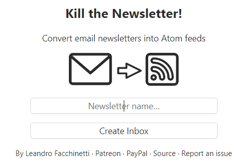
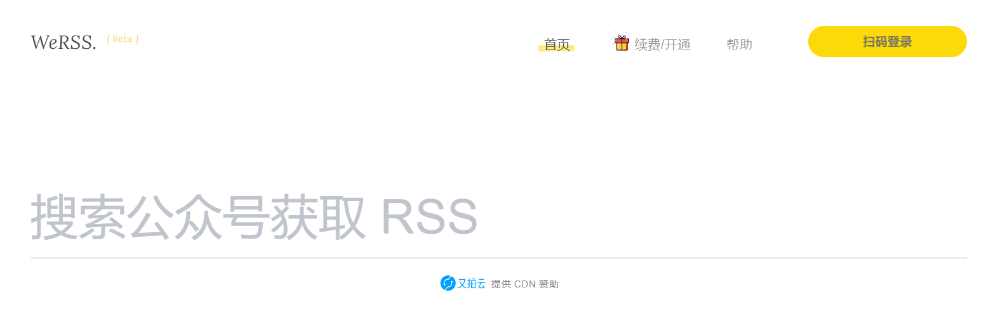
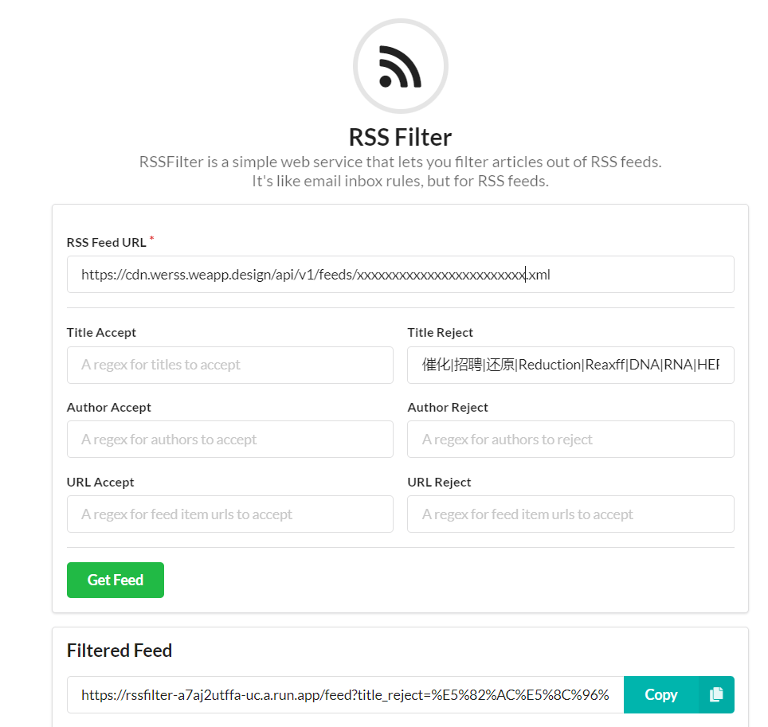
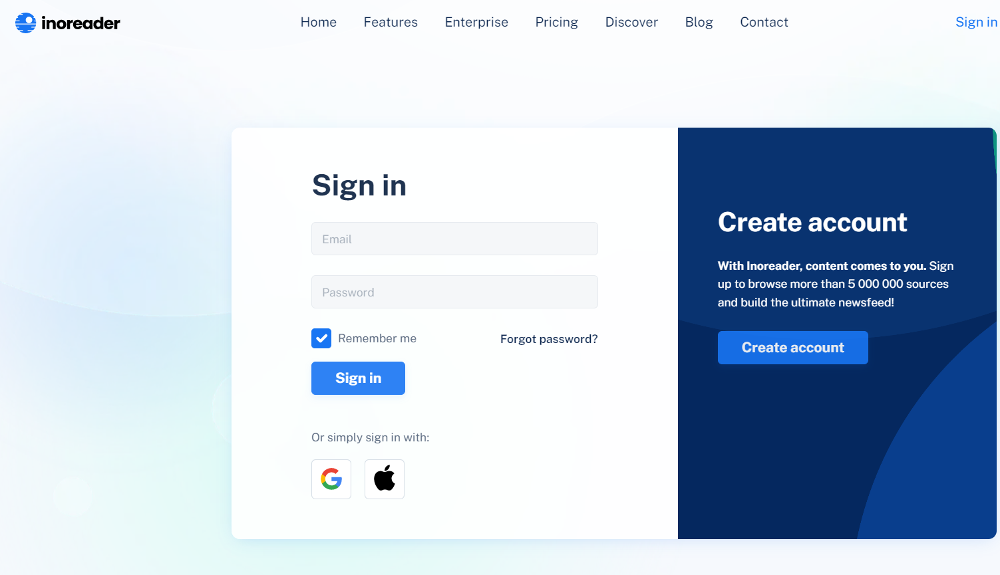
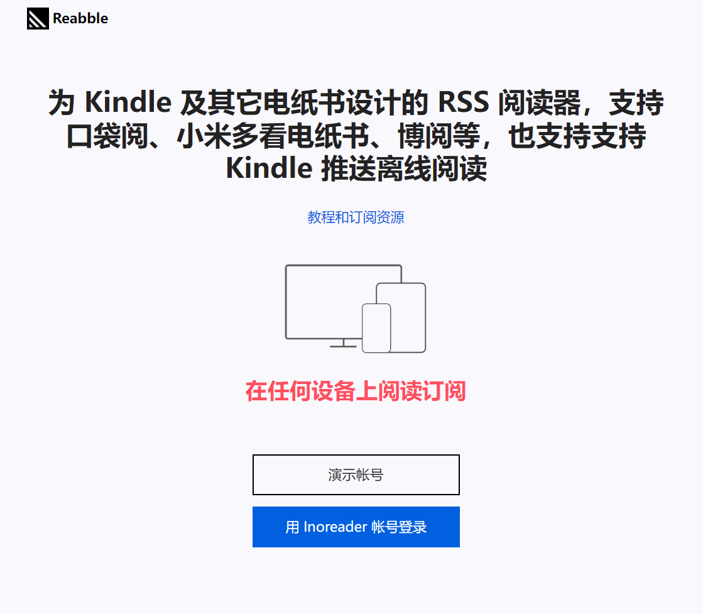

Automatically tags items with keywords and subject headingsSync automatically, Sync full-text context, Disable File syncing.D:\Qsync\dosbin\Refs4Mu\PdfsUpdation always leads to compatibility problems.
extension.zotero.automaticSnapshots to false.app.update.auto and app.update.enabled to false.Advanced/General/config editor:network.proxy.type;1
network.proxy.http;127.0.0.1
network.proxy.http_port;4321network.proxy.type: 0(Direct),1(Manual), 2(PAC), 4(Auto-detect) and 5 (default: System proxy)[auth][shortyear:(0)][journal:abbr:upper:(P)], Force citation keys to plain text, keeping keys unique across all libraries, postfixed for conflict keys, select CiteKey quickcopy format, add item to lib from aux scanner.Add URLs to Bibtex export: no, keep doi rather than url, discard abstract, URL,month,langid,copyright,groups, auto abbreviate journal titles.keep updated,abbreviated journalApply titel-casing to titles, for this option will lead to wrong casing and wrong greek symbols. Also Uncheck Aplly case-protection to capitalized words by enclosing them with braces. You can set the title-casing in zotero.D:\Temp\Download\ZoteroPdfD:\Qsync\dosbin\Refs4Mu\Pdfs{%b}, replace blanksAlways rename & uncheck Ask user when attaching new files; Only work with the following filetypes: pdf,doc,docx,txt,rtf,djvu,mdCtrl+Alt+iCtrl+Alt+fCtrl+Shift+rCtrl+Shift+pCtrl+Shift+uCtrl+Shift+dCtrl+Shift+mGet Long DOIs for new items
I usually delete the tags for DOI not found.
Automatic PDF Download in the zotero scihub setting, to useD:\Refs4Mu\Pdfs, move it to D:\Refs4Mu\Pdfs2D:\Refs4Mu\Pdfs2, restart Jabref.jab.bib).pdf: with .pdf:D\:\\Refs4Mu\\Pdfs2\\, and then replace :D\:\\Refs4Mu\\Pdfs2\\application with :application.| Refs | Zotero | Mendeley | Jabref |
|---|---|---|---|
| Mian Language | Javascript | QT | Java |
| Extension | Several | No | No |
| Sync | Zotero (100 MB)/WebDav, fast, Zotfile (Extension) + cloud drive needed for Attachments | Mendeley (2 GB), slow, maybe fail | No, but cloud drive like dropbox can be used |
| Data File | SQLITE, broken sometimes | SQLITE, broken sometimes | bib (like txt), very robust |
| BIB | Better Bibtex (Extension) | Inherent | Inherent |
| Bibtex Key | Customizable by Better Bibtex | Not Customizable | Customizable |
| File Rename | Customizable by Zotfile | Customizable but limited | Customizable |
| Direcory Watch | Yes | Yes | No |
| Import item from browser | Zotero Connector | Mendeley Web Importer | JabRef Browser Extension, broken sometimes |
| Fetch metadata | By DOI/pubmed…, accurate | Not accurate | By DOI/pubmed…, accurate |
| Fetch DOI | Zotero DOI magnager (Extension) | Inherent | Inherent |
| Shortcuts Customization | Zutilo (Extension) | Not Customizable | Customizable |
| Metadata Update | No | Yes | Yes |
| Pdf Preview | Inherent | Inherent | Inherent |
| Item Preview | Zotero Preview(Extension) Inherent | Inherent | |
| Fulltext Download | Yes | Yes | Yes, but fail more often |
| Integration with Word | MS Word/Libre Word | MS Word | Libre Word, bibtex4word needed for MS word |
| Group Share | Yes | Yes | No |
| Times Cited | Scite | None | None |
| Group or Tag | Tag | Tag | Multi-Level groups, not as convenient as tags |
| Mobile | No | Yes | No |
| Drawback | No Portable version, some bugs in Better bibtex often, some character via Better Bibtex not wright (e.g., in title), Plugins may be not compatible with new version of Zotero | Web Importer import PDF to online library, but the storage is limited, Not Customizable Bibtex Key (bibtexkey with space, not recognized by pandoc), limited Customizable File name | large memory needed, and sometimes stuck when search, Good performance never expected for this java based app, Portable very convenient |
Visit https://kill-the-newsletter.com/，Enter MyRSS, and create inbox. You will get an email and a RSS address, like XXXXXXXXXXXX@kill-the-newsletter.com and https://kill-the-newsletter.com/feeds/XXXXXXXXXXXX.xml.

Register on https://www.storkapp.me/ with your email like xxxxx@qq.com.
Forward your email from storkapp.me to XXXXXXXXXXXX@kill-the-newsletter.com.
Google Scholar to XXXXXXXXXXXX@kill-the-newsletter.com.Web of Science to XXXXXXXXXXXX@kill-the-newsletter.com.Registrate on https://werss.app/, buy one-year service (65 RMB for 16 feeds), convert WeChat public accounts to RSS.


Registrate on https://www.innoreader.com/
Add the RSS URLs to feeds.

Open https://reabble.cn/app#/, login with innoreader account.
